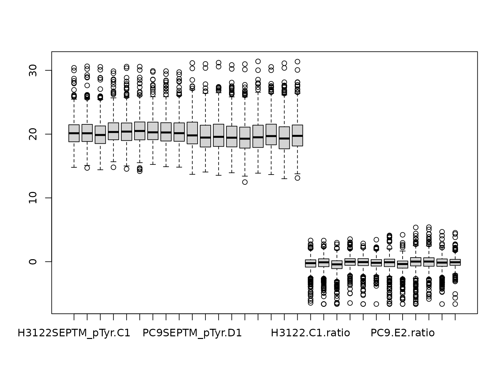

Processing Raw Data for PTMsToPathways
Lucia Williams, Nagashree Avabhrath, Mikhail Ukrainetz, Madison Moffett, Grant Smith, Mark Grimes
Source:vignettes/RawDataProcessing.Rmd
RawDataProcessing.RmdPurpose
This vignette intends to help users produce a matrix with PTM names
as row names (e.g. FYN p Y411) and numeric data in the
columns. The numeric values are the mass spectrometer output, and
NAs represent missing data rather than zeroes. Ambiguous
PTMs, where a PTM could match several proteins, must be separated by
semicolons (for example,
"AARS ubi k747; AMBLIL p U123").
Mass spectrometry data output will vary depending on the experimental
design, source of data, and software used to process the raw spectra. R
supports many file types and can automatically convert them into a data
frame. For example, read.csv() will take a csv file and
convert it into a data frame (read.csv() is a variation of
read.table()). We start with data in tab-delimited
spreadsheet format.
Naming conventions
In this vignette, we use the following shorthand conventions when describing PTMs based on the modifications present in the example data set. Your data will dictate the names of modifications.
- Gene.Name = The HUGO Gene Name is used to identify the protein/gene
- Phosphorylation = “p”
- Lysine acetylation = “ack”
- Lysine methylation = “kme”
- Arginine methylation = “rme”
- Ubiquitination = “ubi”
Preprocessing data
First, let’s load the P2P package, since it contains some helpful pre-processing functions.
The example raw data file for this vignette (downloadable here, or load directly into R using the commands below) contains only phosphorylation sites.
To prepare data for input to PTMsTo pathways, we first read in the
data file. To use your own data file, replace file_path
variable with your own path to file, as in the commented line below.
# file_path <- "path/to/your/file.txt"
file_path <- system.file("extdata", "phospho_cleaned_mapped.txt",
package = "PTMsToPathways")
newphos <- utils::read.table(file_path, sep = "\t", skip = 0, header = TRUE,
blank.lines.skip = T, fill = T, quote = "\"", dec = ".",
comment.char = "", stringsAsFactors = F)
dim(newphos)
>> [1] 933 170As we can see, this table has 933 rows and 170 columns.
First remove internal control rows (reverse sequences), which should yield 908 remaining rows.
Many investigators inspect data in Microsoft Excel, which can export
tab- or comma-delimited files. Unfortunately, Excel can silently convert
some gene names into dates when they appear in a cell by themselves. We
reverse that with the P2P helper function fix.excel(). If there
are dates in the AllGeneSymbols column, we can apply the
fix.excel() function to each of them to convert them back
to gene names.
newphos$AllGeneSymbols <- sapply(newphos$AllGeneSymbols, fix.excel)Investigators will need to identify which columns contain key information for analysis of PTMs.
In this example, the key columns are:
-
Amino.Acid: the modified amino acid, such as S or T -
Positions.Within.Proteins: the amino acid number in the protein sequence -
Modification.Type: the PTM class, such as phosphorylation -
AllGeneSymbols: the HUGO gene name(s) of the protein(s) containing the PTM, separated by “;” if more than one
newphos.header <- newphos[,c("AllGeneSymbols", "Amino.Acid",
"Positions.Within.Proteins", "Modification.Type")]
head(newphos.header)
>> AllGeneSymbols Amino.Acid Positions.Within.Proteins Modification.Type
>> 1 KRT7;NA;NA S 37;37;37 Phosphorylation (STY)
>> 2 KRT7;NA;NA S 38;38;38 Phosphorylation (STY)
>> 10 INPPL1 S 890 Phosphorylation (STY)
>> 11 KDM6A S 388 Phosphorylation (STY)
>> 12 DIAPH1 S 373 Phosphorylation (STY)
>> 13 CTNND1 S 252 Phosphorylation (STY)We provide another helper function, name.peptide(), to
handle ambiguous modification sites (a modification site whose peptide
sequence is the same in more than one protein) separated by “;” or
another separator.
newphos.header$Peptide.Name <- mapply(
name.peptide, genes = newphos$AllGeneSymbols,
sites = newphos$Positions.Within.Proteins, aa = newphos$Amino.Acid)
head(newphos.header)
>> AllGeneSymbols Amino.Acid Positions.Within.Proteins Modification.Type
>> 1 KRT7;NA;NA S 37;37;37 Phosphorylation (STY)
>> 2 KRT7;NA;NA S 38;38;38 Phosphorylation (STY)
>> 10 INPPL1 S 890 Phosphorylation (STY)
>> 11 KDM6A S 388 Phosphorylation (STY)
>> 12 DIAPH1 S 373 Phosphorylation (STY)
>> 13 CTNND1 S 252 Phosphorylation (STY)
>> Peptide.Name
>> 1 KRT7 p S37
>> 2 KRT7 p S38
>> 10 INPPL1 p S890
>> 11 KDM6A p S388
>> 12 DIAPH1 p S373
>> 13 CTNND1 p S252Data columns
Next we identify the data columns, which contain the string
Intensity. The example data file is from a multi-PTM study
and the data in this table are from just the phosphorylation pulldown
(other tables are for other PTM types). The optimal pulldown columns are
straightforward to identify by the pulldown strings present in the
sample names, pTyr in this case. They are also identifiable
by zooming out and looking at the patterns of missing data, the optimal
pulldowns, as a group, have the least missing data. In this data, the
following abbreviations are used: C = Crizotinib,
D = DMSO, E = Erlotinib,
Pr = PR171. So for example the first four columns can
be interpreted as:
C1.1: Crizotinib biological replicate 1- technical replicate 1
C1.2: Crizotinib biological replicate 1- technical replicate 2
C2.1: Crizotinib biological replicate 2- technical replicate 1
C2.2: Crizotinib biological replicate 2- technical replicate 2
So, we first select columns that contain the string
Intensity. There should be 108 of these:
And then select colums that have pTyr. There should be
36 of these:
Now simplify column names (remove Intensity):
names(data.cols) <- sapply(names(data.cols), function(x){
unlist(strsplit(x, "Intensity."))[2]
})
head(names(data.cols))
>> [1] "H3122SEPTM_pTyr.C1.1" "H3122SEPTM_pTyr.C1.2" "H3122SEPTM_pTyr.C2.1"
>> [4] "H3122SEPTM_pTyr.C2.2" "H3122SEPTM_pTyr.C3.1" "H3122SEPTM_pTyr.C3.2"Make zero into NA, which it is. (Note that this may not
apply if you are confident that zero means actual zero, which is
possible with certain technical advances like DIA.) We should have 16265
NA values.
Merge techincal replicates
These data have technical replicates, which means that the same samples were run twice. Due to the stochastic selection of peptides for detection, the pattern of missing values is slightly different between technical replicates. We therefore merge the technical replicates taking the value of either replicate where it’s missing in the other, and averaging values detected in both, using the P2P function merge2cols().
Define technical replicates:
tr1.opt <- names(data.cols)[grep(".1", names(data.cols), fixed=TRUE)]
tr2.opt <- names(data.cols)[grep(".2", names(data.cols), fixed=TRUE)]
tr1.opt[1]
tr2.opt[1]
>> [1] "H3122SEPTM_pTyr.C1.1"
>> [1] "H3122SEPTM_pTyr.C1.2"Use merge2cols() to average technical replicates. This
function ignores NA values in either column and takes the average in the
case where there are two values. In this case, the resulting data frame
should have 18 total columns, one for each biological replicate.
phosdata.merged <- data.frame(matrix(nrow = nrow(data.cols), ncol = length(tr1.opt)))
for (i in seq_along(tr1.opt)) {
phosdata.merged[, i] <- merge2cols(
data.cols[, tr1.opt[i]],
data.cols[, tr2.opt[i]]
)}
dim(phosdata.merged)
>> [1] 908 18And fix up the names of the merged columns to remove the technical replicate numbers:
names(phosdata.merged) <- sapply(tr1.opt, function(x){
substr(x, start=1, stop=nchar(x)-2)
})
names(phosdata.merged)[1]
>> [1] "H3122SEPTM_pTyr.C1"Merge the header and the data together to make a complete data set:
This file could be saved for reference using
write.table():
write.table(phosdatafile, file = "phosdatafile.txt",
row.names = FALSE, sep = "\t")For input into P2P, we want the row names to be the PTM names and the
columns just to be the merged technical replicate columns, so we just
use that data and set the row names to the Peptide.Name
column:
phosdata.df <- phosdata.merged
rownames(phosdata.df) <- phosdatafile$Peptide.NameNotice that this data is the same as the
ex_small_ptm_table that is provided with the package
(though the column names are slightly different):
Log base 2 transformation improves clustering.
log2phosdata <- log2(phosdata.merged)The Creating Networks
vignette show how to use the functions provided in PTMsToPathways to
analyze data stored in a variable called ptmtable.
ptmtable <- log2phosdataOptional data processing steps
For experiments where treatment with drugs is compared to control samples, adding treatment/control ratios as additional data column can improve clustering. This optional step adds dimensions to the data set that enhance focus on the changes in response to drug treatments.
Simplify column names first:
names(phosdata.df) <- sapply(names(phosdata.df), function(x){
paste(unlist(strsplit(x, "SEPTM_pTyr"))[1],
unlist(strsplit(x, "SEPTM_pTyr"))[2], sep = "")
})Explore using ratios where control=rowMeans (D1, D2, D3):
H3122control <- rowMeans(phosdata.df[, names(phosdata.df)
[grep("H3122.D", names(phosdata.df))]],
na.rm=TRUE)Change NaN to NA
H3122control[is.nan(H3122control)] <- NA
PC9control <- rowMeans(phosdata.df[, names(phosdata.df)
[grep("PC9.D", names(phosdata.df))]],
na.rm=TRUE)
PC9control[is.nan(PC9control)] <- NACalculate treatment/control ratios
# H3122 cells
H3122.C1.ratio <- phosdata.df$H3122.C1/H3122control
H3122.C2.ratio <- phosdata.df$H3122.C2/H3122control
H3122.C3.ratio <- phosdata.df$H3122.C3/H3122control
H3122.PR1.ratio <- phosdata.df$H3122.PR1/H3122control
H3122.PR2.ratio <- phosdata.df$H3122.PR2/H3122control
H3122.PR3.ratio <- phosdata.df$H3122.PR3/H3122control
# PC9 cells
PC9.E1.ratio <- phosdata.df$PC9.E1/PC9control
PC9.E2.ratio <- phosdata.df$PC9.E2/PC9control
PC9.E3.ratio <- phosdata.df$PC9.E3/PC9control
PC9.PR1.ratio <- phosdata.df$PC9.PR1/PC9control
PC9.PR2.ratio <- phosdata.df$PC9.PR2/PC9control
PC9.PR3.ratio <- phosdata.df$PC9.PR3/PC9controlPut these columns in a data frame:
phos_ratios <- data.frame(H3122.C1.ratio, H3122.C2.ratio, H3122.C3.ratio,
H3122.PR1.ratio, H3122.PR2.ratio, H3122.PR3.ratio,
PC9.E1.ratio, PC9.E2.ratio, PC9.E3.ratio,
PC9.PR1.ratio, PC9.PR2.ratio, PC9.PR3.ratio)Check (should be TRUE):
Make limits to unweight extreme values. This has been shown to improve clustering, and a ratio of 1000 is biologically not really functional different than a ratio of 100.
hi.ratio <- which(phos_ratios >= 100, arr.ind = TRUE)
low.ratio <- which(phos_ratios <= 1/100, arr.ind = TRUE)
phos_ratios.lim <- replace (phos_ratios, hi.ratio, 100)
phos_ratios.lim <- replace (phos_ratios.lim, low.ratio, 1/100) log2 transformation improves clustering:
phos_ratios.lim.log2 <- log2(phos_ratios.lim)
phosdata_plus_ratios <- cbind(log2phosdata, phos_ratios.lim.log2)And plot to check:
boxplot(phosdata_plus_ratios)
And do one more check:This can be used as the example ptmtable for subsequent testing.
# ptmtable <- phosdata_plus_ratiosCombining data from multiple PTM experiments
For experiments involving multiple PTMs, or if investigators wish to combine several data sets, the data can be combined. For example, pulldowns were made to isolate acetylated and ubiquitinated peptides from the same experimental samples. Combining the data is simply repeating the above steps using the correct optimum data columns, then making the column names the same, and binding all the rows together.
Suppose you had acetylation data in ackdata.df and
ubiquitination data in ubidata.df, both formatted as above
for phosphorylation data in phosdata.df. You could combine
them as follows.
First, make sure the column names are the same:
kgp <- phosdata.df
kga <- ackdata.df
kgu <- ubidata.df
names(kgp) <- sapply(names(kgp), function(x){
paste(unlist(strsplit(x, "_pTyr"))[1], unlist(strsplit(x, "_pTyr"))[2],
sep = "")
})
names(kga) <- sapply(names(kga), function(x){
paste(unlist(strsplit(x, "_AcK"))[1], unlist(strsplit(x, "_AcK"))[2],
sep = "")
})
names(kgu) <- sapply(names(kgu), function(x){
paste(unlist(strsplit(x, "_Ubi"))[1], unlist(strsplit(x, "_Ubi"))[2],
sep = "")
})
identical(names(kgp), names(kga)) # Check TRUEThen rbind them:
ptmdata <- rbind (kgp, kga, kgu) Reorder:
This optional step improves clustering in our hands:
log2ptmdata <- log2(ptmdata)Finally, this dataframe could be used as the example
ptmtable for the P2P functions.
# ptmtable <- log2ptmdataSession info
sessionInfo()
>> R version 4.6.1 (2026-06-24)
>> Platform: x86_64-pc-linux-gnu
>> Running under: Ubuntu 24.04.4 LTS
>>
>> Matrix products: default
>> BLAS: /usr/lib/x86_64-linux-gnu/openblas-pthread/libblas.so.3
>> LAPACK: /usr/lib/x86_64-linux-gnu/openblas-pthread/libopenblasp-r0.3.26.so; LAPACK version 3.12.0
>>
>> locale:
>> [1] LC_CTYPE=C.UTF-8 LC_NUMERIC=C LC_TIME=C.UTF-8
>> [4] LC_COLLATE=C.UTF-8 LC_MONETARY=C.UTF-8 LC_MESSAGES=C.UTF-8
>> [7] LC_PAPER=C.UTF-8 LC_NAME=C LC_ADDRESS=C
>> [10] LC_TELEPHONE=C LC_MEASUREMENT=C.UTF-8 LC_IDENTIFICATION=C
>>
>> time zone: UTC
>> tzcode source: system (glibc)
>>
>> attached base packages:
>> [1] stats graphics grDevices utils datasets methods base
>>
>> other attached packages:
>> [1] PTMsToPathways_0.99.0
>>
>> loaded via a namespace (and not attached):
>> [1] digest_0.6.39 desc_1.4.3 R6_2.6.1 fastmap_1.2.0
>> [5] xfun_0.59 cachem_1.1.0 knitr_1.51 htmltools_0.5.9
>> [9] rmarkdown_2.31 lifecycle_1.0.5 cli_3.6.6 sass_0.4.10
>> [13] pkgdown_2.2.0 textshaping_1.0.5 jquerylib_0.1.4 systemfonts_1.3.2
>> [17] compiler_4.6.1 tools_4.6.1 ragg_1.5.2 bslib_0.11.0
>> [21] evaluate_1.0.5 yaml_2.3.12 otel_0.2.0 jsonlite_2.0.0
>> [25] rlang_1.2.0 fs_2.1.0